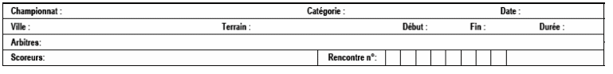
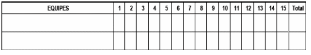

| Championnat | Ecrire le nom de la compétition (Jeux olympiques, Coupe du monde, Coupe internationale, etc.). |
| Date | Jour, mois et année du match. |
| Catégorie | Catégorie des équipes (9U, 12U, 15U, 18U, sénior). |
| Ville | Ville ou a le lieu le match. |
| Terrain | Nom du stade ou le match a eu lieu. |
| Début | Heure du début de match. |
| Fin | Heure de fin du match. |
| Durée |
Le temps écoulé pour le déroulement de la rencontre, en déduisant les arrêts à cause des
conditions atmosphériques, de panne d’éclairage, de panne technique, sans lien avec le déroulement de la rencontre.
[Règle 9.02(I) et commentaire 9.02(i)]. Commentaire : Un arrêt pour soigner un joueur, un manager, un entraîneur
ou un arbitre doit être comptabilisé dans le temps de jeu.
Par exemple : Un match commence à 16:00 et fini à 19:00, mais il a été suspendu pendant 20mn à cause de la pluie, la durée inscrite doit contenir 2:40 et non pas 3:00. La cause de l’interruption doit être inscrite dans la zone des notes. |
| Arbitres | Nom des arbitres avec le nom en majuscule suivit de leur prénom en minuscule et leur nationalité (entre parenthèse). Les noms des arbitres, dans l’ordre suivant : arbitre de plaque, arbitre de première base, arbitre de deuxième base, arbitre de troisième base, arbitre de champ gauche (s’il y en a) et arbitre de champ droit (s’il y en a). [Règle 9.02(K)]. |
| Scoreurs | Nom des scoreurs officiels avec le nom en majuscule suivit de leur prénom en minuscule et leur nationalité (entre parenthèse). |
| Rencontre N° | Numéro de la rencontre. |

| Equipes | Le nom de l’équipe visiteur, celle qui est la première au bâton est écrite dans la case supérieure. Le nom de l’équipe qui reçoit est notée dans la case en dessous. |
| 1, 2, 3, 4 etc. | Le nombre de points par manche est écrit dans les case. Quand il n’y a pas de points marqués, un zéro ‘0’ doit être noté (ne pas écrire un ‘-‘ ou laisser la case vide). Quand, dans le cas de la dernière demi manche, l’équipe qui reçoit mène au score et n’a pas besoin de passer au bâton, écrire un ‘X’ dans la case (ne pas écrire un ‘R’ ou laisser la case vide). |
| Res. | Noter le résultat final du match. |